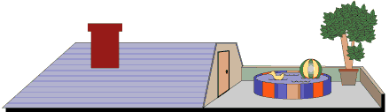

<!DOCTYPE html>

<!--

        Циклическая конструкция for in, используется для перебора
        элементов массива или перебора свойств объекта.

        Принцип работы конструкции:
        for ( переменная_итерации in массив_или_обьект) { ...тело конструкции ...}

-->

<html lang="ru">
<head>
    <title>Конструкция for in</title>
    <link rel="stylesheet" href="style.css">

    <script>

        let house = {
            roof: "<br/>",
            secondFloor: "<br/>",
            firstFloor: "<br/>",
            basement: "<br/>",
            address: "<p style='color:green'>UK. London. Muswell Hill. N10<hr/>"
        }

        // Перебор значений свойств в обьекте - house
        for (let property in house) {         // создание той переменной, которая будет перебирать свойства в объекте house
            document.write(house[property]);  //выводим на экран переменную которая перебирала свойство
        }


        //цикл for/in не проходит по всем элементам массива(свойствам объекта),
        // а перебирает индексы существующих элементов массива
        let arr = [];
        let _ind = 0;
        arr[0] = true;
        arr[4] = 1;
        arr[122] = 'people';
        for (let _item in arr) {
            arr[3] = false; // созданный элемент массива в цикле for/in не всегда отобразится самим циклом
            console.log(_item);
        }
        console.log('-----------------------------------------------')

        console.log(arr[3]);
        console.log('-----------------------------------------------')
        for (let item in arr)
            console.log(`${item}: ${arr[item]}`);

        document.write(arr);
    </script>

</head>
<body>
</body>
</html>
